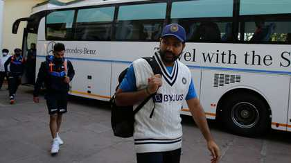
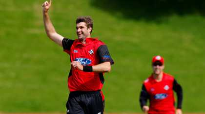

Injured Rohit Sharma to miss Dhaka Test
The regular Indian captain's finger injury hasn't healed completely; KL Rahul will continue to lead the visitors.
Bangladesh include Nasum Ahmed for Dhaka Test One bad session with the bat destroyed our chances: DomingoThe Best WorldCup Ever!?
it was one of the most thrilling spectacles in sports, period, and a fairy-tale ending for the game’s best-ever player
Argentina 3-3 France

Kane Williamson, Gary Stead to skip India tour
Uncapped allrounder Henry Shipley has earned a maiden call-up to the ODI squad for both the Pakistan and India series after impressing in the domestic circuit
Mark Chapman earns first NZC central contract
The two-day Gabba Test more new-age thriller than old-school horror flick
Every point you stayed hooked to the opening Test at Gabba. Never were you allowed to take your eyes off.
Gabba pitch receives 'below average' rating from ICC Another sharp rude awakening for South Africa